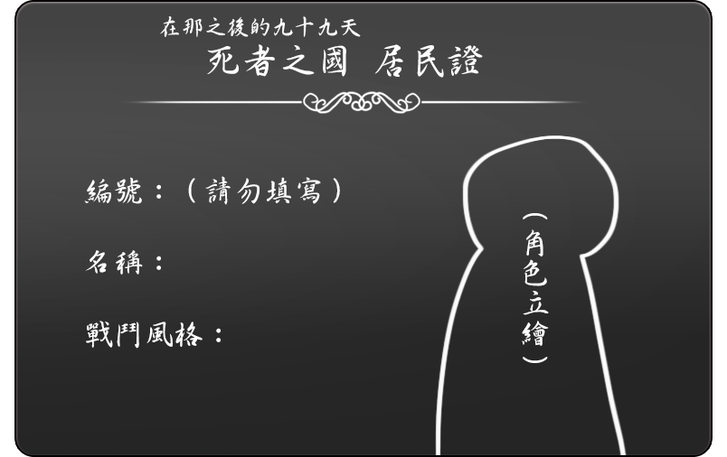

- 創角說明
- 職業特性
- 記憶碎片列表
- 強化部件列表
- 升級申請
-
角色初始設定無論背景、職業、國籍，均為剛甦醒的不死者。除了在創角時取得強化部件【男孩子】的角色可以被承認為男性外，其他狀況一律是生理性別為女的女兒身。
角色甦醒時並不知道自己已經死了，有可能因為初期持有的記憶碎片而多少能猜到自己的結局，但並不肯定。
角色初始能力為【攻擊力1】、【防禦力0】的狀態，攻擊成功時僅能造成1點傷害。初期創角時可選擇一個強化部件。能力可藉由升級申請增加。
角色創建完成後，請備妥需要的項目依照規定進行報名，若角色有任何不符規定者會在表單上註記，請在期限內進行修改。
範例設計圖
- 名稱：角色的名字，角色醒來時少數記得的事情之一。這個名字可以是任何語言，甚至數字、編碼都沒關係。
- 享年：角色的外表年齡，通常為青春期左右的年紀。
- 職業：角色的職業名稱自由設定，此名稱不影響戰鬥系統。
- 寵愛點數：初始為0。角色在完成Karma與Event後可獲得的數值，可用於升級申請。
- 精神壓力：初始為9，最大為10。當角色的精神壓力到達10的時候，會陷入瘋狂。在獲得【寶物】及回報交流創作時可以降低。 詳細請見世界觀與通用名詞-精神壓力。
-
寶物：穩定角色心靈的物品，是維繫著角色精神正常的最後一道防線。角色初期僅持有一個【寶物】，在完成Event時有機會獲得新的【寶物】。
玩家可替【寶物】進行詳細的設定。如無法決定歡迎參考下方的【附件：寶物列表】。 - HP：初始值為10。會根據持有的強化部件有所增加。無論討伐成功於否，戰鬥結束時都會回到最大HP。
- 行動值：初始值為9。即角色的敏捷。會根據持有的強化部件有所增加。在進行戰鬥時，依行動值高到低的順序進行攻擊擲骰。
- 攻擊力：初始值為1。會根據持有的強化部件有所增加。
- 防禦力：初始值為0。會根據持有的強化部件有所增加。
-
記憶碎片：角色甦醒時擁有的片段記憶。角色初期僅持有2個，在完成Event時有機會獲得新的記憶碎片。
角色初期持有的2個記憶碎片請從官方提供的記憶碎片列表中任選2個。 -
強化部件表：角色甦醒時持有的額外部件，強化部件會影響角色的戰鬥能力。角色初期僅持有1個，後續可以寵愛點數申請升級追加強化部件。
角色初期持有的1個強化部件請從官方提供的強化部件列表中任選1個。
強化部件的外觀可由玩家自行設計，禁止對強化部件進行更名。
【附件：寶物列表】
名稱 說明 01. 相片 還是人類時候的相片，是過去幸福所殘缺的一角。或許上頭映著的是妳的生前也不一定。 02. 書 又髒又破的古老書本，是妳讀過無數次的一本書。現在寫在上頭的，只是失去意義的一團文字。 03. 小小的活死物 為什麼會造出這樣的東西呢？這是活死物當中極其罕見的烏鴉、小貓咪或老鼠之類的小動物。至少比較不會那麼無聊啦。 04. 壞掉的部件 依戀對象的一部分，或者是過去自己的一部分。緊緊抱著已經沒有功能的身體部份，看起來會比較像人類嗎？ 05. 手鏡 小小的手鏡。從以前就一直謹慎小心使用的鏡子。儘管討厭照出來的自己，重要的是這個鏡子以前所映照的東西。 06. 人偶 可憐可愛的人偶。與現在的妳比起來，哪一邊才是壞掉的人偶呢？ 07. 布偶 可愛的布偶。可是在經歷過長久的戰亂之後，這個布偶已經…… 08. 飾品 戒指或者首飾之類的東西，閃閃發亮的漂亮飾品。或者對妳而言，是個無可取代的護身符…… 09. 籃子 妳在荒野見到，感覺對上的，裝滿破銅爛鐵的籃子。至於裡面想要放些什麼……妳也不知道 10. 可愛服飾 哪怕身體變得不再像是自己，這件服裝編織出來的可愛永遠不變。就連穿著的妳，都能獲得那顆永遠不變的心。
空白人偶設計圖及居民證

※填寫居民證時請勿使用紙娃娃，文手可留空。 -
職業名稱自由設定，此名稱不影響戰鬥系統。
創角時須選擇戰鬥風格，即戰鬥技能判定色。此項目不可更變。
戰鬥風格分別為下列四種：
爆發型（紅）：帶來殺戮及破壞的戰場女武神。
連擊型（黑）：以迅速攻擊與敏捷動作著稱的游擊兵。
回復型（藍）：具有頑強肉體，延續死亡的不滅鬥士。
控場型（綠）：掌控全局並做出相應行動的優雅策士。
戰鬥系統
戰鬥擲骰：(BZ)技能判定色+(DICE10)成功判定+修正值
（※修正值：即在骰值之後固定增減的數值，將於開放升級部件申請後加入）
戰鬥開始前，首先確認雙方行動值，由行動值較高者先進行回合。
同理，組隊時依行動值先後順序行動。
同行動值的情況，由怪物先攻，隊員之間自行決定。
每回合戰鬥判定
1. 先看(DICE10)+修正值的結果：
攻擊成功與否的判定＝(DICE10)+修正值：1～5失敗、6～10成功；11以上大成功
※大成功的效果：最終數值-10後得到的數值會轉換為攻擊力。
例如：
當最終數值為11時，對方受到的攻擊＝現有攻擊力+1；
當最終數值為12時，對方受到的攻擊＝現有攻擊力+2…以此類推。
2. 再看是否骰出技能判定色，判定色效果如下：
爆發型：骰到對應色，若攻擊成功，本次攻擊所造成的傷害2倍
連擊型：骰到對應色，無論攻擊成功與否，可以再進行一次攻擊
回復型：骰到對應色，若攻擊成功，可以回復自身1HP（若HP為最大值則失效）
控場型：骰到對應色，若攻擊成功，可以使敵方下一回合的攻擊失效
3. 確認攻擊成功時，進入傷害判定
有防禦→雙方進行攻防相消→攻擊力>防禦力時造成傷害，該方HP減少
無防禦→直接造成傷害，該方HP減少
組隊討伐時HP為總和計算，HP歸零的一方失去戰鬥能力。
4.當怪物HP=0時即討伐成功，可以從怪物身上取得素材。
每場成功的討伐必定取得一樣掉落素材；掉落素材不只一種的情況下，各自骰(DICE4)決定。

戰鬥範例
討伐
討伐分為單人討伐及組隊討伐。2人以上的多人討伐稱之為組隊討伐。組隊討伐時，僅能選擇與可挑戰人數相對應的怪物。
【單人討伐】

【組隊討伐】

【PvP】

-
記憶碎片列表待補。
-
強化部件列表
部件名稱 效果 說明 斬骨刀 攻擊力+1 菜刀、切肉刀、柴刀等，隨處可見的刀具。 釘棍棒 攻擊力+1 在木板或棍棒上釘上釘子，雖然簡易但十分有用的武器。 撬棍 攻擊力+1 物理學聖劍。 鉤爪 攻擊力+1 你的手變成了尖銳而有力的鉤爪，可以將敵方撕裂。 鋼鐵齒顎 攻擊力+1 鋼鐵做的齒顎，具有強大的撕咬能力。 骨槍 攻擊力+1 化作槍狀的骨骼從體內刺出，成為你強力的武器。 毒針 攻擊力+1 在你的身體某處存著刺入敵方身體可以注入毒液的針。 獵槍 攻擊力+1 為了擊穿大型野獸毛皮而設計的大口徑單發步槍。 機槍 攻擊力+1 能持續擊發出連串的子彈，造成如同彈雨效果般的凶器。 霰彈槍 攻擊力+1 使用大口徑、多彈丸的特製霰彈，彌補其精準度欠佳的缺陷。 狙擊槍 攻擊力+1 準確度與射程比一般步槍更高更遠的精密型步槍。 合金提箱 防禦力+1 用防爆材料製成的堅固提箱。有的娃娃會以琴盒或洋傘代替。 披鱗覆甲 防禦力+1 覆蓋在身上的堅硬鱗片、厚重毛皮或者甲殼，它可以很好地保護你的身體。 強化外皮 防禦力+1 以先進科技製作的仿真皮膚，有著更好的耐性和韌性。 尾巴 行動值+1 野獸或爬蟲類的尾巴。它可以使你的平衡性更好、機動性更佳。 心臟 行動值+1 給予已經死去身體悸動的人工心臟。它可以使你身體運送氧氣的速度加快，更加靈活輕盈地操縱這具身軀。 腎上腺素 行動值+1 直接在腦中注入的腎上腺素。大幅度地提升了這覆身軀的行動力，同時也開闊了視野。 拼接製品 HP額外+1 左一塊、右一塊拼湊縫合而成的身體，雖然看起來不美觀但是卻十分方便。 男孩子 無 證明你是男孩子的特殊部件。 -
暫不開放